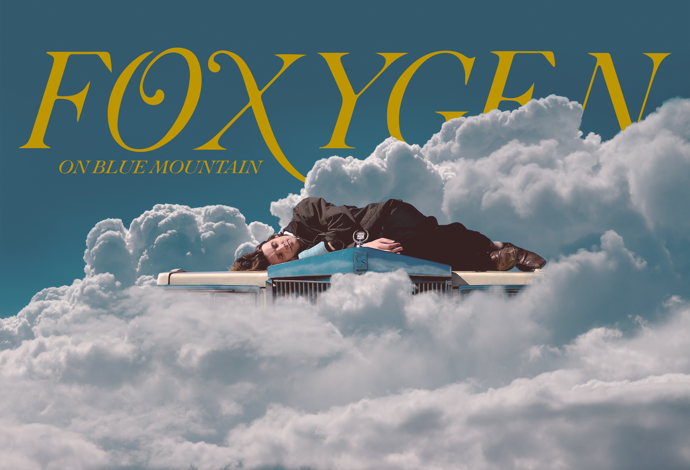

hello again.
When I’m not designing an interface, I've got my hands on a camera and Photoshop. Scroll on through to learn about my design journey and process.

Where I Began
My love for technology and design began with photography and graphic design. This passion now drives me in the field of user experience design.



How I Create Imagery
Every piece of my digital art is original, meaning every element comes from my trusty camera.

How I Edit Shots
I create custom color profiles in Lightroom for each shoot, ensuring that the shots feel coherent.
How I Use These Skills
Creating digital art taught me the foundational skills needed for creating attractive user interfaces.